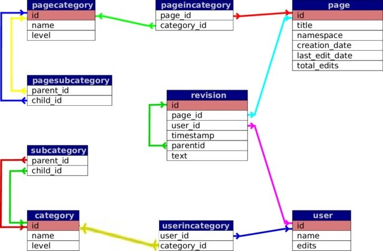
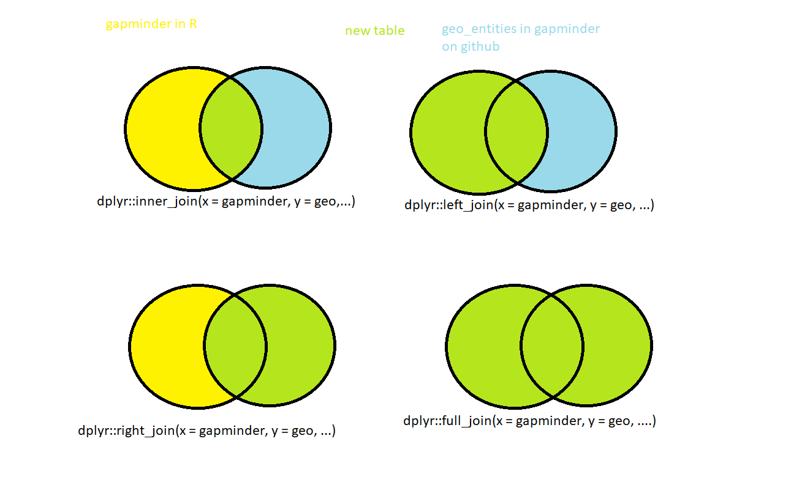

# A tibble: 3 × 6
country continent year lifeExp pop gdpPercap
<fct> <fct> <int> <dbl> <int> <dbl>
1 Afghanistan Asia 1952 28.8 8425333 779.
2 Afghanistan Asia 1957 30.3 9240934 821.
3 Afghanistan Asia 1962 32.0 10267083 853.Joining several data frames with dplyr
Silvie Cinková
2025-08-09
Join tables by a shared column
Revision performed by a user

gapminder
geo
geo <- read_csv(glue("https://raw.githubusercontent.com/open-numbers/",
"ddf--gapminder--fasttrack/master/",
"ddf--entities--geo--country.csv"))
geo <- geo %>% select(country, name, main_religion_2008, income_3groups, world_4region)
glimpse(geo)Rows: 273
Columns: 5
$ country <chr> "abkh", "abw", "afg", "ago", "aia", "akr_a_dhe", "a…
$ name <chr> "Abkhazia", "Aruba", "Afghanistan", "Angola", "Angu…
$ main_religion_2008 <chr> NA, "christian", "muslim", "christian", "christian"…
$ income_3groups <chr> NA, "high_income", "low_income", "middle_income", N…
$ world_4region <chr> "europe", "americas", "asia", "africa", "americas",…Countries in geo vs. gapminder
Little overlap in key column values?
[1] "Korea, Dem. Rep." "Korea, Rep." "Swaziland"
[4] "United Kingdom" "United States" "West Bank and Gaza"
[7] "Yemen, Rep." Control key selection
gapminder Europe 2007
gapminder_europe <- gapminder %>%
filter(continent == "Europe", year == 2007) %>%
select(!c(continent, year))
glimpse(gapminder_europe)Rows: 30
Columns: 4
$ country <fct> "Albania", "Austria", "Belgium", "Bosnia and Herzegovina", "…
$ lifeExp <dbl> 76.423, 79.829, 79.441, 74.852, 73.005, 75.748, 76.486, 78.3…
$ pop <int> 3600523, 8199783, 10392226, 4552198, 7322858, 4493312, 10228…
$ gdpPercap <dbl> 5937.030, 36126.493, 33692.605, 7446.299, 10680.793, 14619.2…European subset of geo
Rows: 273
Columns: 5
$ country <chr> "abkh", "abw", "afg", "ago", "aia", "akr_a_dhe", "a…
$ name <chr> "Abkhazia", "Aruba", "Afghanistan", "Angola", "Angu…
$ main_religion_2008 <chr> NA, "christian", "muslim", "christian", "christian"…
$ income_3groups <chr> NA, "high_income", "low_income", "middle_income", N…
$ world_4region <chr> "europe", "americas", "asia", "africa", "americas",…Preferred gapminder, intersection
# A tibble: 29 × 7
country lifeExp pop gdpPercap country.y main_religion_2008 income_3groups
<chr> <dbl> <int> <dbl> <chr> <chr> <chr>
1 Albania 76.4 3.60e6 5937. alb muslim middle_income
2 Austria 79.8 8.20e6 36126. aut christian high_income
3 Belgium 79.4 1.04e7 33693. bel christian high_income
4 Bosnia … 74.9 4.55e6 7446. bih <NA> middle_income
5 Bulgaria 73.0 7.32e6 10681. bgr christian middle_income
6 Croatia 75.7 4.49e6 14619. hrv christian high_income
7 Czech R… 76.5 1.02e7 22833. cze christian high_income
8 Denmark 78.3 5.47e6 35278. dnk christian high_income
9 Finland 79.3 5.24e6 33207. fin christian high_income
10 France 80.7 6.11e7 30470. fra christian high_income
# ℹ 19 more rowsKeep gapminder intact, no matter what.
One country gets NA in geo_europe columns.
# A tibble: 30 × 7
country lifeExp pop gdpPercap country.y main_religion_2008 income_3groups
<chr> <dbl> <int> <dbl> <chr> <chr> <chr>
1 Albania 76.4 3.60e6 5937. alb muslim middle_income
2 Austria 79.8 8.20e6 36126. aut christian high_income
3 Belgium 79.4 1.04e7 33693. bel christian high_income
4 Bosnia … 74.9 4.55e6 7446. bih <NA> middle_income
5 Bulgaria 73.0 7.32e6 10681. bgr christian middle_income
6 Croatia 75.7 4.49e6 14619. hrv christian high_income
7 Czech R… 76.5 1.02e7 22833. cze christian high_income
8 Denmark 78.3 5.47e6 35278. dnk christian high_income
9 Finland 79.3 5.24e6 33207. fin christian high_income
10 France 80.7 6.11e7 30470. fra christian high_income
# ℹ 20 more rowsWhich is missing?
- country mismatch \(\rightarrow\)
is.na(country.y)
Focus on geo_europe
# A tibble: 73 × 7
country lifeExp pop gdpPercap country.y main_religion_2008 income_3groups
<chr> <dbl> <int> <dbl> <chr> <chr> <chr>
1 Albania 76.4 3.60e6 5937. alb muslim middle_income
2 Austria 79.8 8.20e6 36126. aut christian high_income
3 Belgium 79.4 1.04e7 33693. bel christian high_income
4 Bosnia … 74.9 4.55e6 7446. bih <NA> middle_income
5 Bulgaria 73.0 7.32e6 10681. bgr christian middle_income
6 Croatia 75.7 4.49e6 14619. hrv christian high_income
7 Czech R… 76.5 1.02e7 22833. cze christian high_income
8 Denmark 78.3 5.47e6 35278. dnk christian high_income
9 Finland 79.3 5.24e6 33207. fin christian high_income
10 France 80.7 6.11e7 30470. fra christian high_income
# ℹ 63 more rowsMismatches in geo_europe
dplyr::right_join(x = gapminder_europe, y = geo_europe,
by = c("country" = "name")) %>%
filter(is.na(lifeExp) | is.na(pop) | is.na(gdpPercap))# A tibble: 44 × 7
country lifeExp pop gdpPercap country.y main_religion_2008 income_3groups
<chr> <dbl> <int> <dbl> <chr> <chr> <chr>
1 Abkhazia NA NA NA abkh <NA> <NA>
2 Akrotiri… NA NA NA akr_a_dhe <NA> <NA>
3 Åland NA NA NA ala <NA> <NA>
4 Andorra NA NA NA and christian high_income
5 Armenia NA NA NA arm christian middle_income
6 Antarcti… NA NA NA ata <NA> <NA>
7 Azerbaij… NA NA NA aze muslim middle_income
8 Belarus NA NA NA blr christian middle_income
9 Channel … NA NA NA chanisl christian high_income
10 Czechosl… NA NA NA cheslo <NA> <NA>
# ℹ 34 more rowsGet what you can
# A tibble: 74 × 7
country lifeExp pop gdpPercap country.y main_religion_2008 income_3groups
<chr> <dbl> <int> <dbl> <chr> <chr> <chr>
1 Albania 76.4 3.60e6 5937. alb muslim middle_income
2 Austria 79.8 8.20e6 36126. aut christian high_income
3 Belgium 79.4 1.04e7 33693. bel christian high_income
4 Bosnia … 74.9 4.55e6 7446. bih <NA> middle_income
5 Bulgaria 73.0 7.32e6 10681. bgr christian middle_income
6 Croatia 75.7 4.49e6 14619. hrv christian high_income
7 Czech R… 76.5 1.02e7 22833. cze christian high_income
8 Denmark 78.3 5.47e6 35278. dnk christian high_income
9 Finland 79.3 5.24e6 33207. fin christian high_income
10 France 80.7 6.11e7 30470. fra christian high_income
# ℹ 64 more rowsanti_join detects mismatches instantly
- like
setdiffin vectors
anti_join the other way round
# A tibble: 44 × 4
country name main_religion_2008 income_3groups
<chr> <chr> <chr> <chr>
1 abkh Abkhazia <NA> <NA>
2 akr_a_dhe Akrotiri and Dhekelia <NA> <NA>
3 ala Åland <NA> <NA>
4 and Andorra christian high_income
5 arm Armenia christian middle_income
6 ata Antarctica <NA> <NA>
7 aze Azerbaijan muslim middle_income
8 blr Belarus christian middle_income
9 chanisl Channel Islands christian high_income
10 cheslo Czechoslovakia <NA> <NA>
# ℹ 34 more rowssemi_join detects matches
# A tibble: 29 × 4
country name main_religion_2008 income_3groups
<chr> <chr> <chr> <chr>
1 alb Albania muslim middle_income
2 aut Austria christian high_income
3 bel Belgium christian high_income
4 bgr Bulgaria christian middle_income
5 bih Bosnia and Herzegovina <NA> middle_income
6 che Switzerland christian high_income
7 cze Czech Republic christian high_income
8 deu Germany christian high_income
9 dnk Denmark christian high_income
10 esp Spain christian high_income
# ℹ 19 more rowsWhen your observations are not unique
The two tibbles: math
The two tibbles: social sciences
Possible rescue: unique by several columns
No chance to join
If you cannot find anything that makes them unique.
maths2 <- select(maths, -birthplace)
social_sciences2 <- select(social_sciences, !birthplace)
left_join(maths2, social_sciences2, by = "name")Warning in left_join(maths2, social_sciences2, by = "name"): Detected an unexpected many-to-many relationship between `x` and `y`.
ℹ Row 1 of `x` matches multiple rows in `y`.
ℹ Row 2 of `y` matches multiple rows in `x`.
ℹ If a many-to-many relationship is expected, set `relationship =
"many-to-many"` to silence this warning.# A tibble: 6 × 3
name math_test soc_test
<chr> <dbl> <dbl>
1 John Smith 72 5
2 John Smith 72 76
3 Mary Brown 40 12
4 John Smith 25 5
5 John Smith 25 76
6 Helene Field 91 49dplyr::join help
explore the arguments
relationshipmultipleunmatched
Data with typos in the key column(s)
libraries
fuzzyjoinalong withstringdist(used byfuzzyjoin)DataCamp course Intermediate Regular Expressions in R > Similarities Between Strings
JRC Names
Steinberger Ralf, Bruno Pouliquen, Mijail Kabadjov, Jenya Belyaeva & Erik van der Goot (2011).JRC-Names: A freely available, highly multilingual named entity resource. Proceedings of the 8th International Conference Recent Advances in Natural Language Processing (RANLP). Hissar, Bulgaria, 12-14 September 2011.
JRC Person Names
- persons with 4 spellings of their names
- 2 tables, 20 rows,
- equal pers IDs, different spelling
- test different fuzzy join metrics
JRC each table
# A tibble: 5 × 2
id name
<dbl> <chr>
1 41 John+Ashcroft
2 46 Richard+Boucher
3 56 Adam+Ereli
4 92 Chris+Patten
5 123 Dan+Senor Matching on Levenschtein Distance
joinJRC_lv <- fuzzyjoin::stringdist_inner_join(x = jrc_1, y = jrc_2,
distance_col = "distance", by = "name", ignore_case = TRUE,
method = "lv", max_dist = 2) %>%
relocate(name.x, name.y, distance) %>% select(!c(n.x, n.y, index_id.x, starts_with("PersOrg")))
joinJRC_lv# A tibble: 17 × 6
name.x name.y distance id.x id.y index_id.y
<chr> <chr> <dbl> <dbl> <dbl> <dbl>
1 John+Ashcroft John+Ascroft 1 41 41 2
2 Adam+Ereli Adam+J+Ereli 2 56 56 2
3 Chris+Patten CHRIS+PATTEN 0 92 92 2
4 Peter+Hain PETER+HAIN 0 159 159 2
5 Roberto+Castelli Robero+Castelli 1 173 173 2
6 Shaukat+Sultan Shaukat+Sultán 1 174 174 2
7 Gerhard+Mayer+Vorfelder Gerhard+Mayer-Vorfel… 1 196 196 2
8 Johannes+Rau JOHANNES+RAU 0 202 202 2
9 Roland+Koch ROLAND+KOCH 0 215 215 2
10 Jesus+Caldera Jesús+Caldera 1 231 231 2
11 Martin+Bartenstein Martin+Barteinstein 1 241 241 2
12 Klaus+Zumwinkel Klaus+Zumwinckel 1 252 252 2
13 Philip+Green Phillip+Green 1 253 253 2
14 Umberto+Agnelli UMBERTO+AGNELLI 0 259 259 2
15 Marco+Follini MARCO+FOLLINI 0 284 284 2
16 Bernard+Thibault BERNARD+THIBAULT 0 292 292 2
17 Seamus+Brennan Séamus+Brennan 1 339 339 2Matching on cosine distance between qgrams
joinJRC12_cosine <- fuzzyjoin::stringdist_inner_join(x = jrc_1, y = jrc_2, distance_col = "distance",
by = "name", ignore_case = TRUE,
method = "cosine",
q = 1,
max_dist = 0.15,
) %>% relocate(name.x, name.y, distance) %>% select(!c(n.x, n.y, index_id.x, starts_with("PersOrg")))
joinJRC12_cosine# A tibble: 20 × 6
name.x name.y distance id.x id.y index_id.y
<chr> <chr> <dbl> <dbl> <dbl> <dbl>
1 John+Ashcroft John+Ascroft 0.0277 41 41 2
2 Richard+Boucher Rick+Boucher 0.1 46 46 2
3 Adam+Ereli Adam+J+Ereli 0.0551 56 56 2
4 Chris+Patten CHRIS+PATTEN 0 92 92 2
5 Dan+Senor Daniel+Senor 0.0955 123 123 2
6 Peter+Hain PETER+HAIN 0 159 159 2
7 Roberto+Castelli Robero+Castelli 0.0186 173 173 2
8 Shaukat+Sultan Shaukat+Sultán 0.0383 174 174 2
9 Gerhard+Mayer+Vorfelder Gerhard+Mayer-Vorfel… 0.0165 196 196 2
10 Johannes+Rau JOHANNES+RAU 0 202 202 2
11 Roland+Koch ROLAND+KOCH 0 215 215 2
12 Jesus+Caldera Jesús+Caldera 0.0526 231 231 2
13 Martin+Bartenstein Martin+Barteinstein 0.0105 241 241 2
14 Klaus+Zumwinkel Klaus+Zumwinckel 0.0230 252 252 2
15 Philip+Green Phillip+Green 0.0227 253 253 2
16 Umberto+Agnelli UMBERTO+AGNELLI 0 259 259 2
17 Thomas+Kean Tom+Kean 0.117 274 274 2
18 Marco+Follini MARCO+FOLLINI 0 284 284 2
19 Bernard+Thibault BERNARD+THIBAULT 0 292 292 2
20 Seamus+Brennan Séamus+Brennan 0.0392 339 339 2Matching on Jaccard distance
joinJRC12_jaccard <- fuzzyjoin::stringdist_inner_join(x = jrc_1, y = jrc_2,
distance_col = "distance", by = "name", ignore_case = TRUE, method = "jaccard",
q = 1, max_dist = 0.18) %>%
relocate(name.x, name.y, distance) %>% select(!c(n.x, n.y, index_id.x, starts_with("PersOrg")))
joinJRC12_jaccard# A tibble: 16 × 6
name.x name.y distance id.x id.y index_id.y
<chr> <chr> <dbl> <dbl> <dbl> <dbl>
1 John+Ashcroft John+Ascroft 0 41 41 2
2 Adam+Ereli Adam+J+Ereli 0.111 56 56 2
3 Chris+Patten CHRIS+PATTEN 0 92 92 2
4 Peter+Hain PETER+HAIN 0 159 159 2
5 Roberto+Castelli Robero+Castelli 0 173 173 2
6 Shaukat+Sultan Shaukat+Sultán 0.1 174 174 2
7 Gerhard+Mayer+Vorfelder Gerhard+Mayer-Vorfel… 0.0714 196 196 2
8 Johannes+Rau JOHANNES+RAU 0 202 202 2
9 Roland+Koch ROLAND+KOCH 0 215 215 2
10 Martin+Bartenstein Martin+Barteinstein 0 241 241 2
11 Klaus+Zumwinkel Klaus+Zumwinckel 0.0769 252 252 2
12 Philip+Green Phillip+Green 0 253 253 2
13 Umberto+Agnelli UMBERTO+AGNELLI 0 259 259 2
14 Marco+Follini MARCO+FOLLINI 0 284 284 2
15 Bernard+Thibault BERNARD+THIBAULT 0 292 292 2
16 Seamus+Brennan Séamus+Brennan 0.1 339 339 2